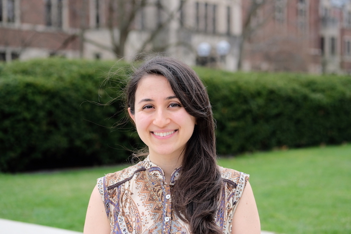

I am an Assistant Professor in the Integrated Systems Engineering and Electrical and Computer Engineering Departments at The Ohio State University. I am also affiliated with the Translational Data Analytics Institute.
My research interests are in network economics, game theory, algorithmic economics, and reinforcement learning. Specifically, my group studies decision making and learning in networks (network games and multi-agent reinforcement learning), fairness in AI (data biases and long-term impacts with human-in-the-loop), and economics of cyber security (incentive design and data analytics). Our research is generously supported by the National Science Foundation (NSF), Amazon, and Cisco.
Recent News
November 2022. Our paper "Social Bias Meets Data Bias: The Impacts of Labeling and Measurement Errors on Fairness Criteria" got accepted in AAAI 2023 (~19.6% acceptance rate). Congratulations, Yiqiao!
November 2022. Yifan has received a "NeurIPS 2022 Scholar Award" to attend the conference. He will also be a group leader for the NeurIPS 2022 High School Outreach Program. Congratulations, Yifan!
September 2022. Our paper "Adaptive Data Debiasing Through Bounded Exploration" got accepted in NeurIPS 2022 (~25.6% acceptance rate). Congratulations, Yifan!
September 2022. We received an award from the NSF FW-HTF program for our project "Future of Construction Workplace Health Monitoring", in collaboration with Penn State (lead) and U. Delaware! [Link]
August 2022. Our paper "DiPLe: Learning Directed Collaboration Graphs for Peer-to-Peer Personalized Learning" got accepted in ITW 2022. Congratulations, Xue!
May 2022. Our paper "Fairness Interventions as (Dis)Incentives for Strategic Manipulation" got accpeted in ICML 2022 (~21.9% acceptance rate)!
May 2022. Our paper "Incentive Mechanisms for Strategic Classification and Regression Problems" got accepted in EC 2022 (~27% acceptance rate)!
March 2022. Our paper "TASHAROK: Using Mechanism Design for Enhancing Security Resource Allocation in Interdependent Systems" got accepted in IEEE S&P (Oakland) (~14% acceptance rate)!
January 2022. I received the NSF CAREER award.
January 2022. New grant from Cisco research to study fair algorithmic decision making through statistical data biasing.
[see all]